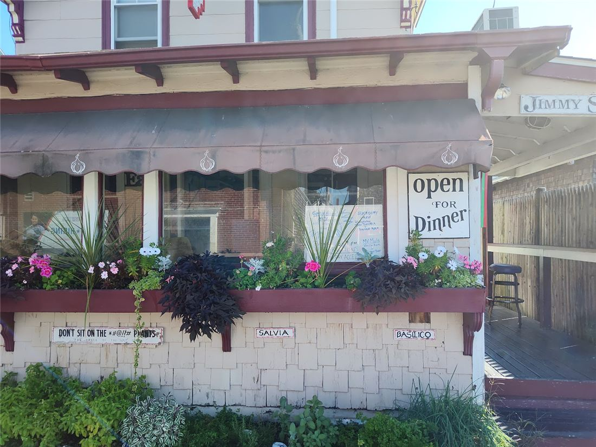

Our Story
It started in a garage on Kennebec Ave
Jimmy Seas began as a tiny pasta spot in a garage on Kennebec Avenue and quickly became an island favorite. In 1994 we moved to a “bigger” space just down the street, and we have been serving pasta straight from the pan to locals, visitors and the occasional celebrity ever since.
Every dish is cooked to order and arrives in the same pan it was made in. Come hungry for big helpings of pan pasta, lobster fra diablo, frutti di mare and zuppa di pesce, and leave room for a cocktail.
Eat garlic.
Live, love,
last longer.